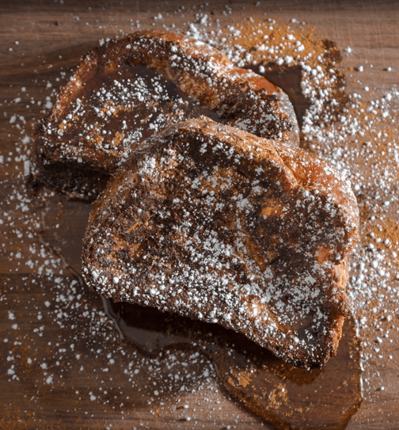

French toast

Have you ever sat down for breakfast and your wife serves you a stack of pancakes and you think to yourself, "Huh, I
wonder if I could have a breakfast that doesnt suck complete ass with a person who doesn't obviously hate me?" Well
stop being so stupid and start making some french toast. Brioche french toast to be specific. You see that picture above
you know its going to be a banger. Les geddit dooo. Bone apple teeth!
Ingredients
- 3 1" slices of Brioche bread (dried out)
- 2 Eggs
- 2 Egg yolks
- 2-3 Tablespoons of Sugar
- 1/2 Teaspoon Vanilla Extract
- 1/2-1 Teaspoon Cinnamon
- 1 Cup Half & Half, Milk or Cream (w.e. you have on hand works)
- 1-2 Tablespoons butter
- Powdered sugar and Maple syrup for serving
Instructions
- Cut the Brioche bread into 1 inch thick slices
- In a deep pan, with enough room to put your bread in, start the custard. Add the eggs, sugar, milk, cinnamon and vanilla extract. Whisk that together very well. Then add the bread to the custard.
- Soak the bread for a minimum of 20 minutes for bread cut 1 Inch thick. If you don’t let it soak long enough, the center of the bread won’t absorb any custard. After about 20-30 minutes, flip and let the other side soak for the same amount of time. Feel free to soak it up to 1-2 hours, but a minimum of about 40 minutes to an hour. If you wish to cut the bread a little thinner, then you can get away with soaking it for a little less time but I recommend the thick cut slices.
- Once the bread is soaked up and weighs about twice as much, it’s ready to cook.
- Preheat the oven to 400 degrees.
- Put an oven-safe pan on medium heat with a tablespoon or two of butter and let them get hot until the butter starts to bubble. If you don’t have an oven-safe pan, get a sheet tray ready and transfer the cooked French toast to the sheet tray before baking them in the oven.
- Add the French toast and let them cook on one side for about 2-4 minutes, or until the bread has a nice brown crust on it. Then flip it and cook the other side for another 2 minutes, or until equally browned, then throw it in the oven for about 7-10 minutes. Then they should be ready to eat.
- Melt some butter and spread it on each slice of french toast. Sprinkle some powdered sugar, a dash of extra cinnamon and some really good maple syrup and you’re in for one hell of a breakfast.
Back to Home